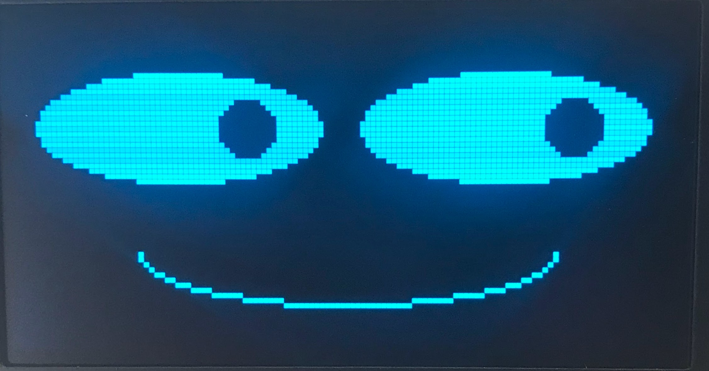

Basic Face Layouts

Drawing Constants
1 2 3 4 5 6 7 8 9 10 11 12 | |
The Face Outline
Let's start out by drawing an outline of the face as a wide white ellipse on a black background.
You don't really need to do this part because people can assume the entire screen is the face.
We are mostly doing it to get you familiar with drawing with the ellispe() function.
if our screen is 128 pixels wide, make the face be 100 wide
FACE_WIDTH = 100 # 50 over for the left and 50 to the right
if our screen is 64 pixels high, make our face be 60 high
FACE_HEIGHT = 60 # 20 up and 20 down
Remember that the six main parameters of the ellipse function are:
1 | |
Here is a sample face outline:
1 | |
Here are the parameters in detail:
- Center of Face - the x,y of the ellipse are HALF_WIDTH, HALF_HEIGHT so it is drawn in the center of the display
- Width and Height of the Face - this is the interger values of half the FACE_WIDTH and half the FACE_HEIGHT
- Draw with White - this is the WHITE parameter
- Fill not Outline - this is the FILL parameter
Eyes
Our eyes can start out by just being two circles. They need to be drawn about 1/3 to 1/2 of the way down the face. This is called the "eye height" and is measured from the top of the display.
1 2 3 4 5 6 | |
Note that here, when I draw the eyes at 1/4 and 3/4 of the width, they seemed too far apart. So I added 10 to the left eye and subtracted 10 from the right eye.
I also didn't quite like the eyes at 1/4 of the height so I add 10 to each of the eyes distance from the top.
Mouth
To draw a black mouth on a white face we will use the ellipse drawing option to only draw the bottom half of the ellipse. To do this we just add one more parameter which has a value of 12.
1 | |
In this case, I moved the vertical distance down 10 from the center of the display. I made the mouth be 60 pixels wided (twice the horizontal radius of 30), and I made the height of the mouth be 20 (twice the vertical radius).
Full Face Function
Here is a full Python function that draws all four components of a face on your robot:
1 2 3 4 5 6 7 8 9 10 11 12 13 14 | |
Try to adjust the parameters as you see fit. See how they change the layout.
Eyebrows
Drawing eyebrows are a little more complicated since they can't easily be drawn by simple shapes like a rectangle, circle or ellipse. But they are very important for signaling different emotions like surprise or anger.
As an exercise, do a web search for faces with different emotions and note the shape of the eyebrows.
Using the Polygon Functiont to draw eyebrows.
To draw a decent eyebrow we will use the powerful and slightly more complicated polygon function. Firs